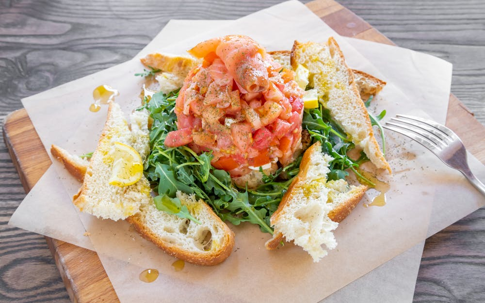

Welcome. Enjoy yourself
REDEFINE FINE DINING

Looking for something good to eat? Try the best pizzas in Pembroke Pines. Sosta Caffé remains one of the most popular in Pembroke Pines thanks to its fresh offerings and classic pizzas. Give their menu a try and see what all the fuss is about. If you're feeling hungry, don't hesitate. Enjoy the top dishes Pembroke Pines has to offer. This restaurant is known for Focaccia Diavolo Pizza. Try it for yourself and see what the fuss is about.
Everything is crafted in-house
with attention to detail and quality
PACKED WITH FLAVOR
Featured Items
Focaccia Diavolo Pizza

Chicken Parmigiana Pasta

Bruschetta di Salmone

Seafood Ciambotta

Make Some Memories
Book Your Table
Impress Your Guests
Groups And Parties
Dine with distinction and celebrate in style. Our packages are catered to your specific requirements. From intimate gatherings to grand events, our private party packages offer a range of options to suit your specific needs.
Whether it's a bday party, baby shower, office function or any other special event, please fill out the form below and we'll do our best to accommodate your desired date and any requests you may have to make your party/celebration memorable.
We Do Catering
For Any Occassion
Address and Phone
10800 Pines Blvd Pembroke Pines, FL 33026
Hialeah, Florida
305-887-8863
Hours
Monday-Thursday,Sunday: 11:30am - 9:30pm
Wednesday-Thursday: 11:30am-9pm
Friday and Saturday:11:30am - 10:30pm
Contact us
Call us at (954)-613-4021
Write us at info@sostacaffe.com